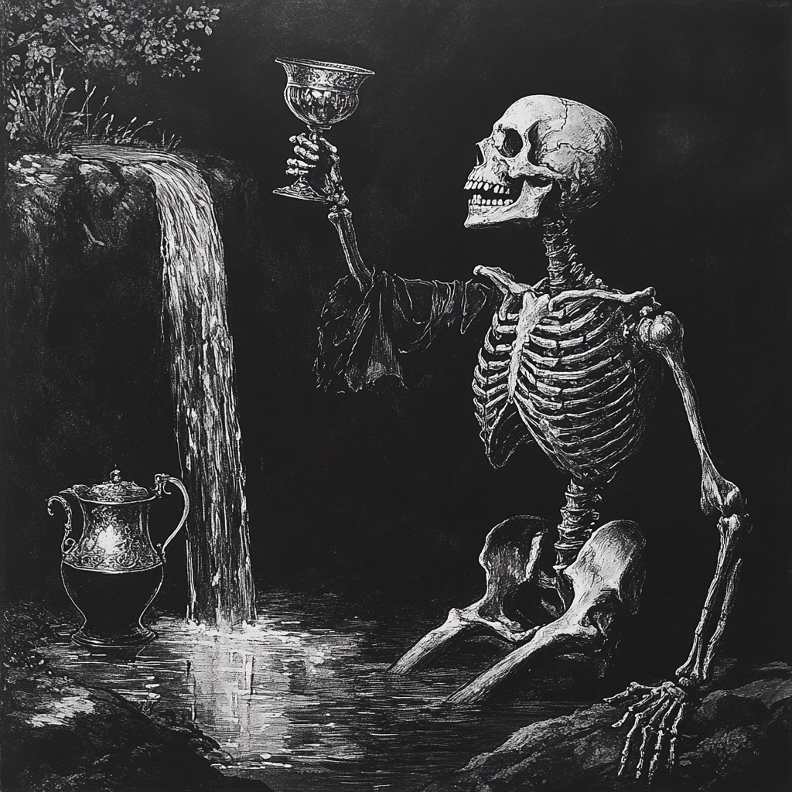

Yet another soul playing startup on the pathless path. If you think I can be helpful reach out.
| Thing | Thought |
|---|---|
| Lizard Feelings | Discovered replit's agents are amazing for getting moody over your ex |